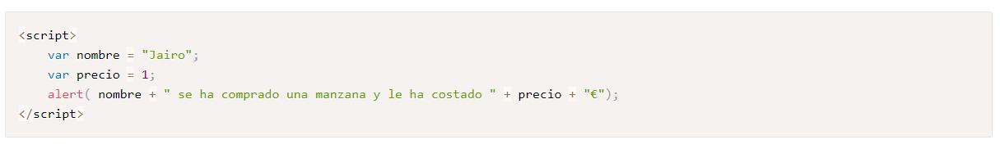

Escribir un programa por lo tanto es escribir instrucciones para que las ejecute el ordenador, utilizando para ello un cierto lenguaje. Es como escribir en inglés: necesitas conocer el vocabulario y la gramática del idioma. En nuestro caso usamos como lenguaje el JavaScript y necesitas conocer sus reglas y su vocabulario. Como ya sabes se trata de un lenguaje interpretado y los programas escritos con estos lenguajes son conocidos como scripts o guiones. Pese a su nombre no tiene nada que ver con Java, este último es un lenguaje algo más complejo con el que se pueden construir programas de propósito general como podría hacerse con C++ o Visual Basic. La única razón de ser de JavaScript son las páginas web. Con JavaScript no pueden construirse programas independientes, sólo pueden escribirse scripts que funcionarán en el entorno de una página web, interpretado por un explorador.
Para comenzar a utilizar Javascript (y cualquier lenguaje de programación) es necesario conocer algunos conceptos básicos, no podemos empezar a hacer una casa si no sabemos que existen los ladrillos. Un programa es una lista de instrucciones, pero esas instrucciones se deberán ejecutar sobre algo, si damos una instrucción escribir debemos especificar que es lo que hay que escribir. Es evidente pues que en las instrucciones del programa también deben figurar los datos con que trabajar. Por ejemplo el nombre de una persona es "Jairo", esta palabra es un dato. El precio de una manzana en euros es 1, este número es otro dato. Estos datos no suelen usarse tal cual sino que se almacenan en unos elementos con nombre denominados variables. En los ejemplos previos usaría una variable, nombre, para guardar "Jairo" o precio para guardar el 1. Si ahora digo al ordenador que escriba nombre el ordenador escribirá su contenido, o sea, Jairo. Abre una nueva página en blanco en Brackets, guárdala como index.html y escribe lo siguiente (entre etiquetas de script): 
Los operadores permiten manipular las variables, realizar operaciones matemáticas, comparaciones lógicas o asignaciones. Existen varios tipos de Operadores. 1. Operador de Asignación: Este operador nos permite asignar un valor a nuestras variables. Operador de Incremento y Decremento: Este operador permite incrementar o decrementar en una unidad el valor de la variable. Para mostrar el resultado de una variable o una sentencia o expresión, podemos usar una función que tiene JavaScript que se llama “console”, en este caso estamos usando la propiedad “log”. Esta función nos mostrará en la consola del navegador el resultado de lo que incluyamos en los paréntesis. Operadores lógicos Nos permite tomar decisiones sobre las instrucciones, incluso nos permite negar una instrucción.
Condicionales: Al hacer un programa necesitaremos establecer condiciones o decisiones, donde buscamos que el navegador realice una acción A si se cumple una condición o una acción B si no se cumple. Este es el primer tipo de estructuras de control que encontraremos. Para ello existen varias estructuras de control: